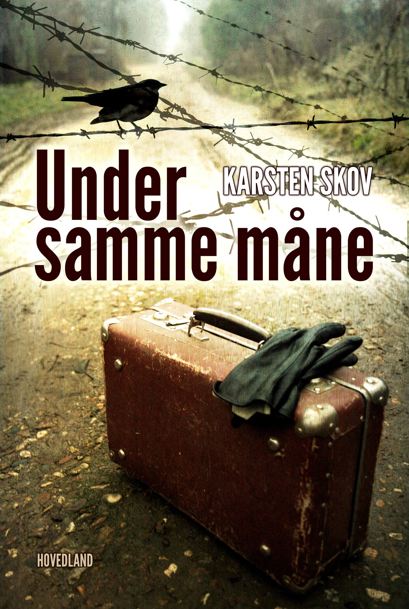

Ny fortælling fra forfatteren til Enkeland og Knacker.
Romanen er om de store begivenheder der udspillede
sig i Tyskland og Danmark i slutningen af 2. Verdenskrig.
Denne gang tager Karsten Skov fat i det tyske
mindretals og mindretallets handlinger,
da de tyske flygtninge kom i stort antal til Danmark.

I februar 1945 er store strømme af tyskere på flugt for de fremrykkende russiske tropper.
Den tyske hær kan ikke holde russerne ud af Tyskland og en enorm flod af flygtninge
er på vej mod vest. Mere end 250.000 tyske flygtningen endte i Danmark, og den attenårige pige, Erika, er en af dem.
Hun har været undervejs i en måned, og sammen med sin mor ender hun i Sønderjylland,
hvor det tyske mindretal tilbyder indkvartering. De tysksindede familier åbner deres hjem
og flygtningene bor side om side med de sønderjyske familier. Her oplever Erika med ét,
en ungdom væk fra det krigshærgede Tyskland, til det langt fredeligere Danmark.
Hun bliver forelsket i hjemmetyskeren Carl, og sammen oplever de et forår,
hvor krigens grimme ansigt ofte kigger frem.
Men snart må Tyskland kapitulere og Danmark bliver frit.
Langsomt forandres Erikas hverdag. Et forvandlet Danmark,
hvor det er ilde set af befolkning at tyske flygtninge er i kontakt med danskere.
Her er et lille glimt omkring hvad bogen handler om
Karsten Skov (f. 1963) var deltaget i forfatterskolen, Skrivekunst, ved Syddansk Universitet i Kolding og han har en mastergrad i IT Siden 1995 har han skrevet bøger, hvor han i starten skrev faglitteratur inden for programmering og systemadministration.
Han debuterede som romanforfatter i 2013 med den anmelderroste roman Knacker. Romanen beskriver det dansk/tyske forhold i Nordslesvig under 1.verdenskrig. Romanen er solgt til filmatisering.
I 2018 udkom hans anden romanen Enkeland, der skildrer det barske liv for krigsenkerne under 1.Verdenskrig, hvor kvinderne sidder tilbage efter at alle krigsduelige er sendt ned i Europas skyttegrave for at deltage i den frygtelige 1.Verdenskrig.